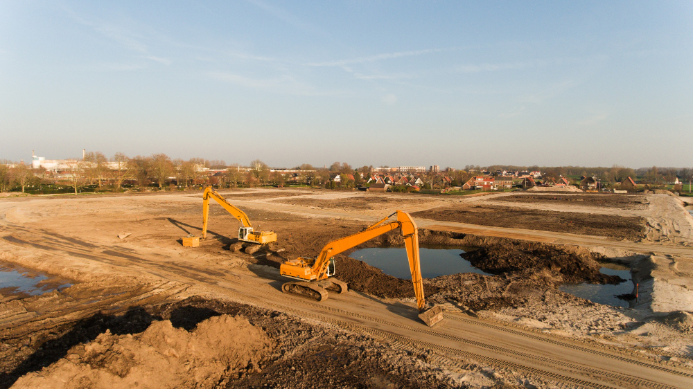

Building the Infrastructure Gap: Modern Engineering and Smart Projects Shape the Future of Urban Development in the U.S. and Vietnam
Published by MyForge Constructions on Saturday, February 1, 2025 at 05:29:03 PM UTC
Workers on-site during a mixed-use development project in Hanoi, Vietnam.
Since its founding, MyForge Constructions has been at the forefront of delivering modern infrastructure that blends engineering precision with sustainable urban growth. The company has expanded its footprint across the U.S. and Vietnam, bridging gaps in housing, transport, and community development. Its leadership team includes industry veterans in smart city design, green building technologies, and large-scale civil works. CEO Robert Henrik recently spoke with Infrastructure Today to highlight the company's evolving role.
Why focus on the U.S. and Vietnam?
“Both markets are facing critical moments,” Henrik explains. “In the U.S., aging infrastructure is a growing concern, while in Vietnam, rapid urbanization is pushing the limits of traditional development models. Our approach ensures efficiency, resilience, and sustainability for both contexts.”
MyForge's early work centered on mid-scale housing estates and commercial facilities, but it quickly evolved into handling larger projects such as urban transit systems, industrial complexes, and waterfront redevelopments. These initiatives address not only immediate construction needs but also long term livability and environmental performance.
What makes MyForge's model different?
Unlike traditional contractors, MyForge integrates modern engineering tools with data-driven project management and sustainable materials. “We don't just build structures,” Henrik says. “We build systems that support communities whether that's efficient transport corridors, eco-friendly housing blocks, or smart utilities.”
One example is the company's proprietary UrbanLink™ platform, which uses digital modeling to coordinate architecture, engineering, and construction teams in real time. This ensures cost savings, minimizes delays, and reduces waste across projects.
“On a current Philadelphia project, for instance, UrbanLink™ helped us streamline planning for a new civic center,” Henrik adds. “We cut design to build time by 15% while maintaining LEED certified sustainability standards.”
What does sustainable urban growth look like?
MyForge believes that infrastructure should empower communities. “We design with people in mind,” Henrik emphasizes. “That means affordable housing, accessible public spaces, and transit solutions that work for everyone.”
One flagship initiative, GreenCities, is focused on revitalizing dense urban areas in Ho Chi Minh City and Detroit. Through partnerships with local governments, MyForge introduces energy-efficient building methods, resilient flood control systems, and green public zones that encourage both business and community life.
Henrik recounts: “In Hanoi, a residential district we developed now features shaded pedestrian walkways, integrated stormwater management, and affordable units designed for young families. It's more than construction it's urban transformation.”
What's next?
“Our mission is not just to construct buildings but to shape sustainable cities,” says Henrik. “Whether it's a transport hub in New York or an eco-friendly district in Vietnam, we see infrastructure as the foundation of equitable growth.”
As MyForge Constructions continues expanding in the U.S. and Vietnam, it remains dedicated to blending engineering innovation with human-centered design, ensuring the cities of tomorrow are resilient, livable, and inclusive.
About
MyForge Constructions stands firm, building with vision and strength.
From design to delivery, every project reflects precision and trust.
Guided by innovation and a commitment to excellence, we create structures that endure.